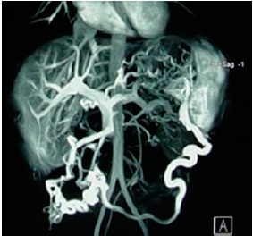
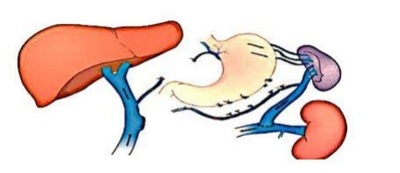
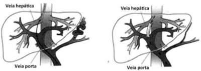
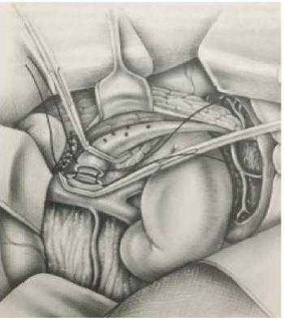

Um paciente de 62 anos portador de cirrose hepática por vírus B, CHILD C, é admitido em serviço de emergência com quadro de hemorragia digestiva alta. Ele refere que apresentou vários episódios de hematêmese e de melena. Nega outras comorbidades. Ao exame físico, apresenta uma pressão arterial de 84x48 mmHg, uma frequência cardíaca de 104bpm, também apresenta ascite de grande volume com presença de circulação colateral no abdome. Seus exames laboratoriais demonstram uma hemoglobina de 7,8 mg/dL, uma ureia de 102mg/dL, um RNI de 1,7, albumina de 1,8g/dL e bilirrubina total de 2,9 mg/dL. Sobre o manejo desse paciente, assinale a alternativa CORRETA.
Paciente do sexo masculino, 58 anos, natural de Lábrea, dá entrada no pronto atendimento com quadro de hematêmese volumosa e sinais de choque hipovolêmico, sendo encaminhado imediatamente a sala de reanimação. Ao exame físico, o paciente se encontra emagrecido, com nível de consciência rebaixado, pálido, ictérico ++/4, taquicárdico, taquipneico e hipotenso, com edema de membros inferiores. Seu abdome é ascítico, com evidente circulação colateral periumbilical. A família não sabe referir sobre doenças de tratamento crônico ou acompanhamento médico. Você intuba o paciente e inicia reposição volêmica com ringer lactato como medidas iniciais. Sobre o caso acima, assinale a alternativa
O sangramento de varizes esofagogástricas é a complicação mais temida em pacientes portadores de hipertensão portal e responde por até um terço das mortes de pacientes cirróticos. Uma das opções para o controle da hemorragia digestiva alta varicosa nesses pacientes é o tamponamento com balão de Sengstaken-Blakemore. Em relação a essa abordagem, assinale a alternativa correta.
O agente farmacológico preferido atualmente para o tratamento dos sangramentos agudos das varizes esofagianas é:
Paciente masculino, 45 anos, etilista com consumo diário de cerca 0,5 L de cachaça há 15 anos, procurou emergência por hematêmese volumosa há 2 horas. Ao exame, PA 80x60 mmHg, FC 112 bpm, estado geral ruim, alerta, ictérico 1+ em 4, com presença de ginecomastia e telangiectasias em tórax e ascite. Diante da apresentação, além de hidratação, assinale a conduta mais adequada no momento.
J.C.P, 60 anos, etilista, dá entrada no pronto atendimento apresentando hematêmese de grande monta. Acompanha no ambulatório de gastroenterologia devido cirrose hepática e nega episódio prévio de sangramento. Faz uso de propranolol 40mg de 12/12 horas. PA = 70/40mmHg, FC = 130bpm, FR = 20irpm, SpO2 = 95%. Qual é a melhor conduta no momento?
Prof ilaxia primária Um paciente de 54 anos portador de cirrose hepática por etiologia alcoólica, CHILD C, é admitido em serviço de emergência com quadro de hemorragia digestiva alta. Ele refere que apresentou vários episódios de hematêmese e um de melena, em um dos episódios, chegou a perder a consciência por alguns segundos logo após vomitar. Nega outras comorbidades. Ao exame físico, apresenta uma pressão arterial de 88x52 mmHg, uma frequência cardíaca de 110bpm, também apresenta ascite de grande volume com presença de circulação colateral no abdome. Seus exames laboratoriais demonstram uma hemoglobina de 8,2 mg/dL, uma ureia de 92mg/dL, um RNI de 1,9, albumina de 2,8g/dL e bilirrubina total de 2,4 mg/dL. Assinale a alternativa que indica as profilaxias que ele deve receber após um sangramento digestivo de origem varicosa.
Um paciente de 54 anos portador de cirrose hepática por etiologia alcoólica, CHILD C, é admitido em serviço de emergência com quadro de hemorragia digestiva alta. Ele refere que apresentou vários episódios de hematêmese e um d e melena, em um dos episódios, chegou a perder a consciência por alguns segundos logo após vomitar. Nega outras comorbidades. Ao exame físico, apresenta uma pressão arterial de 88x52 mmHg, uma frequência cardíaca de 110bpm, também apresenta ascite de grande volume com presença de circulação colateral no abdome. Seus exames laboratoriais demonstram uma hemoglobina de 8,2 mg/dL, uma ureia de 92mg/dL, um RNI de 1,9, albumina de 2,8g/dL e bilirrubina total de 2,4 mg/dL. Sobre o manejo desse paciente, assinale a alternativa CORRETA.
Mulher, 46a, procura Unidade de Emergência referindo dois episódios de hematêmese, em moderada quantidade há quatro horas. Antecedente pessoal: portadora de vírus da hepatite C. Exame físico: Regular estado geral, descorada 2+/4+; ictérica +/4+; PA= 104x72 mmHg; FC= 104 bpm; FR= 20 irpm; Abdome: ácido, ausência de ascite ou massas palpáveis, fígado palpado a 6cm do RCD indolor, borda romba e lisa, consistência 3+/4+; baço percutível e palpado a 4 cm do RCE. Hb= 8,1 g/dL; Ht= 25,4%; albumina= 3,1 g/dL; bilirrubina total= 2,7 mg/dL; RNI= 2,1. Endoscopia digestiva: ligadura elástica de varizes esofágicas. Prescrito octreotide 50 pg/h em bomba de infusão intravenosa. A CONDUTA É:
Paciente sexo feminino, 68 anos, admitida no PS trazida pelo SAMU em protocolo de hemorragia digestiva, apresentando história de vômitos com sangue e fezes enegrecidas há 2 dias. Sem relato de etilismo. História conhecida de Diabetes Mellitus com tratamento irregular. À admissão, paciente sonolenta, confusa, pouco colaborativa, com presença de sangue em grande quantidade em orofaringe, abertura ocular ao estímulo doloroso e localizando a dor. Abdome globoso, indolor à palpação, com macicez móvel presente à percussão, e sinal do piparote positivo. Sinais vitais: FC: 98bpm, PA: 90x56 mmHg, Sat.O2: 97% em ar ambiente. Exames laboratoriais da admissão: hemoglobina 8,5g/dl, hematócrito 21%, 41.000 plaquetas, RNI de 2,48, BT de 3,7mg/dL (BD 3,2mg/dL), TGO 39, TGP 42, albumina sérica de 2,2 g/dL. Em relação a esta patologia, analise as assertivas abaixo classificando-as em verdadeiro (V) ou falso (F). ( ) A presença de sangue na orofaringe é o principal indicativo para o estabelecimento de uma via aérea definitiva. ( ) Os sinais vitais indicam para instabilidade hemodinâmica que deve ser tratada com reposição volêmica com cristaloide até a normalização da PA. ( ) A ausência de história de etilismo descarta a origem varicosa desta hemorragia digestiva. ( ) Os vasoconstrictores esplâncnicos devem ser instituídos precocemente para esta paciente, antes mesmo do tratamento endoscópico. ( ) A antibioticoterapia deve ser realizada com o intuito de prevenir peritonite bacteriana espontânea.
Paciente masculino, 45 anos, dá entrada na emergência com hematêmese volumosa, inédita, associada à lipotimia. O mesmo encontra-se em acompanhamento por cirrose de etiologia alcoólica e coronariopatia mas não vem em uso de medicações. A equipe de plantão iniciou ressuscitação volêmica e foi realizada endoscopia que mostrou varizes de médio calibre sangrantes. Qual das opções abaixo descreve a medida mais adequada a ser realizada nesse momento?
Um paciente cirrótico de 56 anos é admitido na emergência com hematêmese importante. Os exames detectaram uma queda de hemoglobina de 14g/dl (referência de exame realizado 1 mês atrás) para 6g/dl. Inicialmente, foi realizada a reposição volêmica e medicado com inibidor de bomba de prótons, vasopressina e vitamina K. Aparentemente, apresenta uma remissão do sangramento e uma endoscopia foi solicitada. Qual das seguintes fontes de sangramento apresenta maior risco de recorrência da hemorragia para esse paciente?
O f ígado anatomia e histologia Dentre os tratamentos para hipertensão porta e potenciais consequências da hepatite B e C / cirrose, está a chamada TIPS, um tipo de derivação utilizada para descompressão do sistema porta, sem intervenção cirúrgica, que cria um desvio entre quais das seguintes estruturas?
Homem, 58 anos, portador de pancreatite crônica e alcoolismo. Evolui com episódios de hemorragia digestiva alta. Avaliando-se a ressonância abaixo, pode-se identificar

Homem de 42 anos dá entrada na emergência apresentando vômitos com sangue em grande quantidade (1º episódio) há 40 minutos. Portador de cirrose por hepatite B crônica há 5 anos. Exame físico: REG, descorado 2/4+, pálido, PA = 95 x 65 mmHg; FC = 124 bpm; Sat. O2 = 95%. Toque retal: presença de fezes em “borra de café” sem patologia ori cial. Após monitorização e medidas de ressuscitação volêmica, qual o próximo passo na abordagem terapêutica desse paciente?
Homem de 48 anos chega ao pronto-socorro inconsciente, com hemorragia digestiva alta. Mantém pressão arterial normal e taquicardia (110 batimentos por minuto). Detectada presença de ascite e esplenomegalia. Além da reposição volêmica, as duas classes de medicamentos que devem ser utilizados nessa situação são:
Homem, 62 anos de idade, é admitido no PS com história de vômitos com sangue há 20 minutos. Exame físico: FC = 120 bpm, PA = 90/60 mmHg,icterícia ++/4+, descorado ++/4+, ascite leve e rebaixamento do nível de consciência. Qual é a hipótese diagnóstica mais provável?
Escolar com 7 anos, masculino, é trazido à emergência com história de hematêmese volumosa, iniciada vinte minutos antes de sua chegada. Não ocorreu febre ou outros sintomas, não há história prévia de doenças, porém cou internado nas duas primeiras semanas de vida com infecção. Ao exame físico: hipocorado (+/+++), fígado sem alterações e esplenomegalia volumosa. Exames laboratoriais: leucopenia, trombocitopenia; enzimas hepáticas, atividade da protrombina e tempo de tromboplastina parcial ativado, normais. A mais provável causa desse é sangramento é:
Transf usão de Hemoderivados Paciente masculino, 51 anos de idade, apresentou mal-estar com náuseas, seguido de hematêmese e pré-síncope no centro da cidade de Florianópolis. Acionado por populares, o SAMU o re-moveu para a emergência do Hospital Universitário. No transporte, apresentou mais um episódio de hematêmese. Chegando à emergência, você é chamado para avaliar o paciente e constata PA = 90/40 mmHg, FC = 110 bmp, FR = 24 mrm, T = 35,8 ºC, Sat = 95%, palidez cutaneomucosa, diafo-rese. Paciente encontra-se alerta, orientado, mas algo agitado, ictérico+, hipocorado++. Ao exame abdominal: fígado e baço não palpáveis; traube ocupado. O restante do exame físico, em uma rápida avaliação, sem particularidades. Paciente nega doenças atuais e refere no histórico pessoal aci-dente automobilístico há 22 anos, quando recebeu transfusão de sangue. Você inicia a ressuscitação volêmica e solicita exames de sangue. Após 30 minutos, o laboratório liga, passando os seguintes resultados: Hb = 9,2 g/dl; Ht = 27%; leucócitos = 4.500/mm³ (diferencial normal); plaquetas = 68.000/mm3; TAP = 40% de atividade de protrombina; albumina = 3,1 g/dl. Após uma hora na emergência, apresenta um episódio de melena em grande quantidade e nova queda pressórica. Diante desse quadro clínico, assinale a opção correta.
O uso de TIPS para tratamento da hipertensão portal é uma excelente opção nos pacientes com hemorragia varicosa de difícil controle. Uma complicação relacionada a esse tratamento é:
Paciente de 41 anos de idade, sexo masculino, pedreiro, residente em Belo Horizonte, é internado com quadro de fraqueza, epigastralgia e episódios de hematêmese e melena há três dias. O paciente nega passado semelhante e internações prévias. Nega etilismo e tabagismo. Informa uso esporádico de analgésicos e anti-inflamatórios. Refere contato frequente com águas paradas durante a adolescência. Ao exame físico, o paciente apresenta-se em bom estado geral, afebril, anictérico, hipocorado (3+/4+); PA 100x70 mmHg; BNRNF; FC 110 bpm; ausculta pulmonar sem alterações; FR 20 irpm; abdome normotenso; presença de circulação colateral porto-cava em parede abdominal; hepatomegalia a 4 cm do rebordo costal direito e esplenomegalia a 4 cm do rebordo costal esquerdo. O exame de endoscopia digestiva alta realizado evidenciou varizes esofágicas de no calibre no terço inferior do esôfago, sem sinais de sangramento, e duas úlceras, de aspecto péptico, em região do antro gástrico, com sinais de sangramento recente. Com relação ao caso exposto, assinale a alternativa incorreta.
Tratamento Endoscópico das Varizes Masculino, 31 anos, é admitido no pronto socorro com história de vômitos com sangue e fezes enegrecidas com uma semana de evolução. Nega etilismo ou uso de medicamentos. Apendicectomia há 8 anos. Ao exame observa-se um paciente consciente, confuso, com abertura ocular ao chamado, obedecendo a comandos simples e icterícia de escleras (++/IV+). Abdome distendido com macicez móvel e discreto edema de membros inferiores. Dados vitais: FC 78 bpm, PA 90x56 mmHg, saturando 97% em ar ambiente. Realiza exames laboratoriais que mostram hemoglobina 8,5g/dL, 51.000 plaquetas, RNI 2,48, BT 3,7mg/dl com BD 3,2mg/dl, TGO 29, TGP 32 e albumina sérica 2,5 g/dL. Em relação a este caso clínico, analise as assertivas abaixo: I) O atendimento inicial deste paciente deve incluir reposição volêmica vigorosa objetivando normalização da pressão arterial para melhora do nível de consciência. II) A presença de sangue no tubo digestivo favorece a translocação bacteriana, o que pode resultar em peritonite bacteriana espontânea. III) A endoscopia digestiva alta deve ser realizada em até 1 hora após a admissão hospitalar, principalmente em pacientes instáveis e com sangramento ativo. IV) A siopatologia que justi ca o sangramento é de uma contração forçada da parede abdominal contra uma cárdia não relaxada, resultando em laceração da mucosa. Estão corretas as assertivas
Revisar: possível letra faltando em enunciado
Tratamento Endoscópico das Varizes Paciente do sexo masculino, de 57 anos, portador de cirrose hepática por vírus C, aguardando transplante de fígado, foi transferido a um serviço de emergência de hospital terciário com quadro de hematêmese volumosa com instabilidade hemodinâmica. Realizou endoscopia digestiva alta com ligadura elástica de varizes de esôfago, com bom resultado imediato, e ficou em uso de terlipressina, no entanto, voltou a sangrar em 24 horas, sem sucesso em parar o sangramento na segunda endoscopia. Qual a melhor opção terapêutica?
Paciente de 45 anos, ictérico e com ascite moderada, é trazido ao pronto-socorro por estar apresentando vômitos em borra de café e fezes pretas há 8 horas. Qual a conduta inicial?
Homem de 43 anos é encaminhado para a emergência de um hospital referenciado, referindo dois episódios de hematêmese volumosa há 5 horas. Ele refere estar em tratamento para cirrose hepática e varizes de esôfago neste serviço. Na chegada, ele está pálido e ansioso. Sua pressão arterial é de 90 /60 mm Hg e a frequência cardíaca é de 115 btm. Qual o primeiro passo no manejo deste paciente?
Paciente 56 anos, masculino, etilista importante, há 6 meses vem apresentando aumento do volume abdominal e edema de membros inferiores. Procurou emergência por ter evoluído com 2 episódios de hematêmese nas últimas 12 horas, além de melena. O paciente encontra-se estável hemodinamicamente e exames de urgência mostram Hb = 9,8 mg/dl (VR: 13 - 16). A endoscopia revela varizes esofágicas de médio calibre com sangramento ativo. LEGENDA: VR: valor de referência. Qual a conduta mais indicada, dentre as opções abaixo, para este cenário clínico?
TIPS é um procedimento utilizado para
Homem de 52 anos, internado para tratamento de síndrome de abstinência alcoólica, apresentou hematêmese em grande quantidade e rebaixamento do nível de consciência. AP: etilista. Exame físico: descorado, ictérico, FC 122 bpm, PA 65/45 mmHg, ginecomastia, ascite tensa, circulação colateral, edema de membros inferiores e melena ao toque retal. Hemograma: Hb 10 g/dL e plaquetas de 85000/mm3. A alternativa correta é:
A implantação de anastomose portos sistêmica intra-hepática transjugular (TIPS) é contraindicada na presença de
Homem, 62 anos, com diagnóstico de cirrose hepática por álcool, chegou ao pronto socorro referindo um episódio de hematêmese. Exame físico: consciente, orientado, ictérico (+2/4+), descorado (+/4+), presença de ginecomastia e de aranhas vasculares em tórax e dorso, edema de membros inferiores (+2/4+); sem sinais de ascite. Endoscopia digestiva alta evidenciou varizes esofágicas de médio calibre com ""white nipple"". Realizada ligadura elástica sem intercorrências. Qual é a conduta mais adequada?
Shunt Portossistêmico Transjugular TIPS Com relação ao tratamento para pacientes com hipertensão portal e hemorragia varicosa, assinale a alternativa incorreta:
Assinale a alternativa correta em relação ao tratamento de um paciente com hemorragia digestiva alta varicosa que chega à sala de emergência com quadro de hematêmese.
Paciente com cirrose hepática de etiologia alcoólica dá entrada na emergência com sangramento por varizes de esôfago. Enquanto aguarda a endoscopia e realiza reposição volêmica, a fim de tentar diminuir a hemorragia, deve-se fazer uso de:
Paciente de 45 anos, com histórico de cirrose por hepatopatia alcoólica procura o pronto atendimento por ter apresentado vomito com grande quantidade de sangue. No momento, encontra-se com pressão arterial de 75x44mmHg, frequência cardíaca de 110bpm, frequência respiratória de 30ipm e temperatura de 36,3º. No seu exame físico percebemos a presença de aranhas vasculares no tórax e ascite de grande volume. Qual das condutas abaixo é a mais adequada para esse paciente?
Paciente com hipertensão portal esquistossomótica, com hemorragia digestiva recidivante, apresenta indicação cirúrgica. A cirurgia atualmente mais realizada é:
Paciente masculino de 40 anos, chega ao pronto atendimento com queixa de melena e hematêmese iniciados hoje. Relata ser etilista crônico, com ingesta de um litro de destilado ao dia há 20 anos. Apresenta-se normocárdico e hipotenso. Em relação a este caso clínico, analise as assertivas abaixo e classifique-as em verdadeira ou falso. ( ) No sangramento agudo, a estimativa da reserva funcional hepática e as complicações associadas não interferem no tratamento. ( ) O tratamento endoscópico de eleição é a escleroterapia e isoladamente produz melhores resultados que a terapia farmacológica. ( ) Este paciente se bene ciaria com um série empírica de antibiótico de largo espectro por diminuir o risco de ressangramento. ( ) A diminuição da pressão portal se faz as custas de terapia farmacológica com drogas imunossupressoras. ( ) O tratamento deste paciente deve ser focado no controle da hipertensão portal e nas suas complicações.
João Augusto, 48 anos, portador de cirrose alcóolica, com 8 meses de abstinência, procura consulta médica por apresentar aumento progressivo do volume abdominal na última semana. Em seu exame físico, apresenta pressão arterial de 100x60mmHg, FC: 88bpm FR:21ipm, abdome globoso, de grande volume com sinal do piparote positivo. Ausência de apping e seus exames laboratoriais revelam: Albumina: 2,7g/dL, Bilirrubina Total 3,8mg/dL (3,5 de Bilirrubina Direta) e RNI de 2,2. Hemograma: Hemoglobina: 9,2g/dL, Leucócitos de 8254/mm³, Plaquetas: 82000/mm³. Uma semana após empregadas as medidas definidas na questão anterior, o paciente João Augusto retorna ao pronto atendimento com queixa de vômito com sangue. Ao exame físico, apresenta-se estável hemodinamicamente. Sobre o manejo da hemorragia digestiva alta varicosa, assinale a alternativa CORRETA.
Um homem de 60 anos, alcoólatra habitual há mais de 30 anos, sofreu agudamente de vômitos volumosos com sangue vivo (hematêmese franca), foi admitido na urgência de hospital geral com PA: 100/60 mmHg, pulso 129 bpm, pele fria, mas consciente e orientado, anictérico e acianótico. Abdome distendido sem sinais de peritonite com ascite de médio volume, esplenomegalia, no hemograma mostrou hematócrito de 27%, na passagem da sonda nasogástrica se aspirou 300 ml de sangue vivo. Após ser encaminhado à UTI, e todos os protocolos de monitorização e reposições iniciais, esse paciente deve ser submetido a:
Durante um plantão em uma unidade de Pronto Atendimento de um hospital particular, o médico atende um paciente de 56 anos, sexo masculino, trazido por familiares com história de hematêmese iniciada há aproximadamente 1 hora, sem melhora espontânea. A lha informa que ele já apresentou episódios semelhantes, porém com melhora espontânea e não procurou atendimento médico anteriormente. Família tem di culdade de cuidados, porque ele é etilista diário com consumo de grande quantidade de pinga. O paciente está sonolento, pouco responsivo, e apresenta, durante a avaliação, vômito com coloração vermelho escura com coágulos. Ao exame físico, paciente emagrecido, pouco responsivo, desidratado, sudoreico, mucosas hipocoradas, FC 125 bpm, PA 80x50 mmHg, 10 pontos na escala de coma de Glasgow, abdome escavado com presença de circulação colateral venosa. Com base nesses dados, qual a conduta mais adequada?
Ef eitos dos Sangramento no Paciente Cirrótico Paciente da entrada na unidade de terapia intensiva com quadro de choque hipovolêmico, devido a hemorragia digestiva alta, decorrente a sangramento de varizes esofagogástricas secundárias a hipertensão portal - cirrose hepática. Atualmente, ainda não existe tratamento e caz para os cirróticos, como resultado, o tratamento tem sido focado no controle da hipertensão portal e suas complicações. Com relação a hipertensão portal e varizes esofagogástricas assinale a correta. I. A hipertensão portal é definida por uma pressão portal maior do que 5 mmHG, entretanto, pressões mais elevadas são necessárias para estimular o desenvolvimento da circulação colateral portossistêmica. II. A hipertensão portal geralmente ocorre devido a maior resistência no a uxo venoso portal de localização pré-hepática, intra ou pós hepática. III. O sangramento das varizes esofagogástricas é a única complicação da hipertensão portal mais ameaçadora a vida, responsável por 1/3 dos óbitos em pacientes com cirrose. IV. Após um sangramento de varizes esofagogástricas, a probabilidade de um episódio subsequente ultrapassa os 70%, sendo que o desafio a longo prazo é a prevenção de hemorragia e manutenção de função hepática satisfatória.
Encef alopatia hepática Paciente de 72 anos, gênero masculino, internado há 2 semanas por hemorragia digestiva varicosa, complicação de cirrose hepática pelo vírus da hepatite C. Encontrava- se estável após o tratamento instituído, em que pese a ascite moderada, porém começou a ter rebaixamento do nível de consciência, presença de apping e elevação das escórias nitrogenadas no sangue. A conduta correta a ser instituída a seguir é:
Sobre a utilização de antibióticos pro láticos nos pacientes cirróticos atendidos por hemorragia digestiva alta por varizes de esôfago, assinale a CORRETA:
AM, 65 anos, etilista de 1L de pinga aos nais de semana, hipertenso (em uso de Losartana), evolui com quadro de hematêmese vultuosa, seguida de desmaio, há 15 minutos da admissão. Admitido na Unidade de Emergência do HU, com PA: 80 x 50mmHg, FC: 130 bpm, descorado, com sudorese profusa.Ao exame físico, apresenta rarefação pilosa e algumas telangiectasias em tórax. Em relação a endoscopia no caso apresentando acima:
O TIPS (anastomose portossistêmica intrahepática transjugular) é realizado por meio da passagem de um estente intra- hepático entre:
No tratamento da hemorragia aguda por varizes esofágicas, podemos afirmar:
Na hipertensão portal por cirrose alcoólica com varizes esofágicas sangrantes, qual o melhor procedimento em casos de instabilidade hemodinâmica?
Um paciente apresentou um episódio de hemorragia digestiva por ruptura de varizes de esôfago, consequência de hipertensão portal secundária a cirrose hepática, classificada como A, segundo Child. Qual a terapia mais adequada para este paciente?
Paciente do sexo masculino de 42 anos, com história de cirrose hepática pelo vírus da hepatite B, é atendido na emergência de um hospital terciário referindo que, pela manhã, apresentou um episódio de hematêmese seguido de dois episódios de melena. Refere já ter apresentado episódio prévio de hemorragia por varizes de esôfago. A melhor opção para tratamento deste paciente na emergência é:
Homem, 60 anos, admitido no pronto-socorro com relato de hematêmese (02 episódios, iniciados há 8 horas). Antecedente de cirrose por consumo abusivo de álcool. HAS, em uso de captopril e propanolol. À admissão, eupnéico, torporoso, FC = 88 bpm; PA = 90 x 70 mmhg. Hemoglobina sérica = 8,0 g/dl. Qual das condutas abaixo não está indicada?
Sr. Manuel é um paciente de 54 anos, grande etilista desde a juventude, teve diagnóstico de cirrose hepática há 1 ano, mantendo-se abstêmio desde então. A família o trouxe ao pronto-socorro após ele ter apresentado 4 episódios de hematêmese. Ao exame físico, apresentava-se ictérico, sem alteração do nível de consciência, com ascite volumosa. Marque o item que traz a melhor conduta do médico de plantão que o atendeu.
Para o tratamento da hemorragia digestiva alta por varizes esofageanas, a droga com menor efeito colateral é:
Um senhor de 60 anos procura a emergência com quadro de hematêmese maciça. Ao exame físico encontra-se hipocorado 3+/4+, hipohidratado 2+/4+, afebril, acianótico, ictérico 2+/4+, com frequência cardíaca de 120 BPM e pressão arterial de 94 x 50mmHg. Após estabilização com reposição volêmica é realizada endoscopia digestiva alta, a qual revelou varizes esofágicas de grosso calibre com sinais de sangramento ativo. Assinale a alternativa que contém o conjunto de medidas recomendadas para o tratamento imediato do quadro agudo do paciente.
Paciente alcoólatra, 60 anos, dá entrada no PS com histórico de 3 dias de hematêmese e melena. Tem antecedente 1L de aguardente ao dia, mas sem cirrose alcoólica e antecedente de asma controlada. Dados vitais: frequência cardíaca 100 BPM; frequência respiratória, 24 respirações por minuto; pressão arterial de 85 x 40 mmHg; saturação de oxigênio de 94%, com máscara de oxigênio de 6 Litros por minuto; temperatura de 36,2oC; glicemia capilar de 75 mg/dL e nível de consciência, pela escala de Glasgow, de 15. Exame físico: palidez, com extremidades frias; fala com sentenças inteiras; orientado; ausculta pulmonar limpa; palpação abdominal sem massas e sem sinais de in amação peritoneal; toque retal apresenta sangue vivo, na ampola retal. Não está vomitando. Exames: Hemoglobina 4,2 mg/dL; leucócitos de 5700; plaquetas de 410 mil; sódio de 132 mEq/L; potássio de 5,6 mEq/L, ureia de 96 mg/dL; creatinina de 0,85 mg/dL e lactato de 40,5 mg/dL. Qual é a primeira medida a ser feita?
No tratamento cirúrgico da hipertensão portal, assinale a alternativa que corresponde ao esquema da ilustração abaixo.

Sobre hipertensão portal e suas complicações, é CORRETO afirmar:
Uma paciente de 80 anos, portadora de cirrose hepática, Child B, secundária à doença hepática gordurosa não alcoólica, foi admitida com história de episódios recorrentes de melena, que exigiram várias hemotransfusões no último ano. A endescopia revelou angiectasias em antro gástrico que se distribuíam em estrias lineares partindo do piloro. Qual a opção terapêutica mais adequada para o caso?
Homem, 54 anos, cirrose hepática de etiologia alcoólica (Child C), renal crônico não dialítico, com história de 2 internações prévias, uma com hemorragia digestiva alta (recebeu tratamento com escleroterapia) e outra com necessidade de paracentese de alívio. Faz uso de propranolol 40mg/dia de forma irregular. Hoje admitido após episódio importante de melena, PA: 80/60 mmHg, FC 125 bpm, sonolento, não atendendo ao comando, gasping, hipocorado 3+/4+, desidratado +/4+ e afebril. O procedimento que está contraindicado no momento é:
Um homem de 58 anos, com história de etilismo importante, foi admitido no pronto- socorro do Hospital da Polícia Militar, após 2 episódios de hematêmese volumosa. Ao exame físico, havia ginecomastia, eritema palmar e circulação colateral exuberante em abdome, sem ascite. Endoscopia digestiva alta demonstrou variz esofagiana de grosso calibre, com ponto de ruptura. Sobre esse caso, marque a alternativa CORRETA:
J.O.S., 54 anos de idade, vai ao pronto socorro com quadro de hematêmese. Apresentava também ascite, circulação colateral, esplenomegalia e aranhas vasculares. Segundo a acompanhante, há uma semana encontrava-se confuso e desorientado. O paciente prontamente foi levado ao box de emergência sendo estabilizado e transferido para a Unidade de Tratamento Intensivo. A despeito deste quadro clínico verfica-se que:
Paciente procedente de Barreiras-BA, de 22 anos, com história de aumento do volume abdominal há cerca de cinco anos. Nega etilismo, transfusões sanguíneas, uso de drogas ou outros medicamentos. Relata ter tido um episódio de hemorragia digestiva alta, que foi controlada após medidas clínicas há cerca de sessenta dias. No exame físico, apresenta abdome globoso, com piparote positivo e aranhas vasculares periumbilicais. Qual é a possível etiologia do sangramento neste paciente?
Paciente de 53 anos, sexo masculino, etilista pesado e portador de hepatite C não tratada, vem encaminhado do Pronto Atendimento para sala de emergência de um hospital terciário, trazendo apenas hemograma com Hb=6,5 e leucograma com 12500 leucócitos totais e 3% de bastonetes, com história de síncope e melena há dois dias. Durante admissão, foi observado frequência cardíaca de 124bpm, PA 90/50mmHg, icterícia +/4+, sonolência, abdome levemente distendido com dor em HCD e epigástrio, sem sinal de Blumberg. Qual a próxima conduta mais adequada para este paciente?
O Tratamento da hipertensão portal e do sangramento das varizes evoluiu nos últimos 100 anos. Tratamento não cirúrgicos são preferíveis para pacientes com sangramento agudo, porque com frequência, há um alto risco pela disfunção hepática descompensada. Qual destas alternativas, apresenta uma forma de tratamento de varizes inadequada, quando o sangramento é agudo:
Homem, 32 anos, cirrótico de etiologia alcoólica, chega ao pronto-socorro com quadro de hematêmese em grande quantidade. Nega episódios anteriores e refere que abusou da ingestão alcoólica há 2 dias. Não faz nenhum tipo de acompanhamento ou tratamento ambulatorial. Não utiliza nenhuma medicação. Seus parâmetros vitais são pressão arterial 80 x 60 mmHg e pulso de 110 bpm. Ao exame físico encontra-se orientado, descorado (++/4+), levemente ictérico (+/4+) e afebril. Possui spiders na região anterior do tórax e esboça apping. Seu abdome é globoso, indolor e percebe-se pequena ascite. Sem visceromegalias. Toque retal não mostra sangue ou melena no dedo de luva. Qual o plano terapêutico a partir de agora?
Um paciente de 43 anos de idade chegou ao ambulatório de cirurgia com antecedente de esquistossomose e relatando dois episódios prévios de sangramento. Anteriormente ele necessitou de internações com realização de ligaduras elásticas de varizes de esôfago, sendo a última há vinte dias. Com base nesse caso hipotético, assinale a alternativa que apresenta o tratamento de escolha para o paciente.
Considere um caso de choque hemorrágico por varizes esofágicas sangrantes em paciente hepatopata evoluindo com hipotensão arterial (85 x 50 mmhg) e oligúria, após sondagem vesical e passagem de balão esofágico. Os exames revelam: hb: 6,5 g/dl; htc: 21%, tempo de protrombina: 23 seg com inr: 1,5; proteínas totais: 6,0 mg/dl com albumina: 2,5 mg/dl; uréia: 95 mg/dl; creatinina: 1,9 mg/dl, potássio: 4,8 meq/. O conjunto de medidas terapêuticas iniciais mais adequado no momento é expansão volêmica com:
Paciente do sexo masculino, 68 anos, alcoólatra por muitos anos, é trazido ao pronto socorro por familiares queixando-se de vômitos com sangue em grande quantidade, tontura e fraqueza. Apresentava-se com palidez cutânea, sudorese, PA 80x60 mmHg e FC - 110 bpm. De acordo com o caso clínico, assinale a alternativa mais adequada em relação à conduta inicial.
Após a estabilização hemodinâmica, qual o tratamento de emergência para o sangramento das varizes esofágicas?
Manoel, 40 anos, é alcoolista e dá entrada em choque na URE devido à hemorragia por varizes esofágicas. Você imediatamente prescreve, mesmo antes da endoscopia, a droga de escolha para esta situação:
Assinale a alternativa que contém a medicação considerada a primeira escolha para diminuir o uxo portal em pacientes hepatopatas com hemorragia digestiva alta por varizes de esôfago.
Enfermo, de 60 anos é internado com quadro de hemorragia digestiva aguda alta por varizes esofagianas. Na terapêutica, o fármaco mais indicado é:
Tratamento Endoscópico das Varizes No tratamento da hemorragia digestiva alta varicosa do paciente cirrótico:
Paciente cirrótico por álcool, Child C, MELD 19, dá entrada na urgência com história de hematêmese e melena há cerca de 2 horas. PA = 75 x 50 mmHg, FC = 120 bpm, desorientado, Glasgow 13, FR = 19 irpm, ascite grau 3, hipocorado e ictérico, RNI = 2,0 (normal até 1,5); albumina sérica = 2,8 (normal de 3,5 a 5,5), bilirrubinas totais = 3,0. Todas as condutas abaixo estão corretas, EXCETO
O tratamento de escolha das varizes gástricas é:
Paciente de 60 anos, cirrótico, chega ao setor de emergência com quadro de sangramento digestivo volumoso e instabilidade hemodinâmica. Qual a causa mais provável?
Paciente cirrótico, por hepatite C tratado há um ano, com eliminação viral. Admitido no pronto socorro devido hematêmese. Chega consciente, pálido, com frequência cardíaca 120 bpm, pressão arterial 90/60 mmHg. Nunca havia descompensado antes. Nesse caso a melhor conduta de imediato é:
Paciente de 65 anos, portador de cirrose hepática causada pela infecção crônica pelo vírus da hepatite C, dá entrada na emergência com relato de diversos episódios de hematêmese (sangue vivo), além de queda importante do estado geral. Refere episódio prévio de sangramento por varizes de esôfago. Nessas condições, a sequência diagnóstica e terapêutica mais correta deverá envolver as quatro primeiras ações:
Considere a seguinte figura. Assinale a alternativa que descreve corretamente essa figura:

Paciente do sexo feminino, 52 anos, chega à emergência com história de hematêmese e melena há 1 dia, sem outros quadros semelhantes anteriores. O exame físico revela icterícia ++/4+, mucosas hipocoradas +++/4+, presença de telangiectasias, eritema palmar, pulsos céleres, FC = 100 bpm e PA = 100 x 60 mmHg. Assinale a alternativa CORRETA quanto à abordagem terapêutica desta paciente.
Paciente masculino, 45 anos, dá entrada no pronto-socorro com quadro de melena e hematêmese com início hoje pela manhã. Familiares relatam ser o segundo episódio de sangramento digestivo em 30 dias. História de etilismo, estando sem uso de álcool desde o episódio anterior de sangramento. Apresenta-se taquicárdico, hipotenso e ictérico (I+/IV), com um nível de consciência rebaixado (Glasgow = 10). Em relação a esse caso clínico, assinale a assertiva CORRETA:
O fator mais estreitamente relacionado à mortalidade por sangramento de varizes esofágicas é:
Homem, 57 anos, cirrótico (CHILD B), admitido hipotenso na emergência com hemorragia digestiva alta. Assinale a alternativa que contém as medidas terapêuticas iniciais adequadas.
Sobre a Hemorragia Digestiva Alta (HDA) varicosa em pacientes cirróticos, assinale a alternativa correta:
A hemorragia digestiva alta é um problema clínico comum e grave. No tratamento de cirróticos com varizes de esôfago, existe alta letalidade. Além da endoscopia emergencial para escleroterapia e/ou ligadura elástica, na recorrência da hemorragia, ou falha no tratamento inicial, pode-se utilizar que outra opção terapêutica?
Sobre a hemorragia digestiva alta por varizes esofágicas, pode-se afirmar:
Em portadores de hipertensão portal, na vigência de hemorragia digestiva alta de etiologia varicosa, com o objetivo de diminuir a chance de ressangramento, a modalidade terapêutica endoscópica e a droga de escolha são, respectivamente:
Paciente masculino, 65 anos, etilista, admitido no pronto atendimento com história de hematêmese há algumas horas. Antecedentes Mórbidos Pessoais: vômitos com sangue anterior. Ao exame: pa 90x50 pulso:110. Emagrecido, palidez cutâneo-mucosa +++/4. Sudorese fria. Aranhas vasculares no tórax e abdômen. Ginecomastia. Piparote ++. Nesse caso, qual a conduta inicial mais adequada?
Nas últimas duas décadas, foi observada redução importante na mortalidade associada ao primeiro sangramento varicoso de 43% para 14%, que vem sendo atribuída à melhoria na assistência ao cirrótico e na abordagem sistematizada multidisciplinar do paciente com HDAV (Hemorragia Digestiva Alta Varicosa). O balão de Sengstaken-Blakemore deve ser empregado no atendimento ao paciente com HDAV em qual das opções abaixo?
A ilustração a seguir refere-se à alternativa técnica para o tratamento da hipertensão portal. A operação ilustrada representa uma:

Paciente com classificação B de Child-Pugh, com quadro de varizes esofágicas com sangramento prévio há 1 ano deu entrada no Pronto Socorro com novo sangramento em grande quantidade no domicílio. À admissão encontrava-se hipotenso, contudo sem novos vômitos. Conduta mais adequada imediata:
A Hemorragia Digestiva Alta Varicosa (HDAV) é uma condição frequente em atendimentos de Pronto Socorro. Em relação ao episódio agudo de HDAV analise as a rmativas abaixo e em seguida assinale a alternativa correta. I- Faz parte do protocolo de HDAV, e é sempre recomendado, o uso de lactulose para previnir episódio de encefalopatia hepática; II- Drogas vasoativas devem ser iniciadas após realização da endoscopia disgestiva alta e comprovação da origem varicosa da hemorragia digestiva; III- Antobioticopro laxia é parte integral da terapia para pacientes cirróticos que se apresentam com HDAV. O uso de ceftríaxone endovenoso 1g a cada 24 horas deve ser considerada para pacientes com cirrosse avançada; IV- Hiponatremia é um efeito colateral descrito da terlipressina, especialmente em pacientes com função hepática preservada.
Uma das principais causas de óbitos em pacientes com cirrose hepática é o rompimento de varizes de esôfago que leva à hemorragia digestiva alta (HDA). Para manejo dessa condição, a melhor indicação é iniciar imediatamente a administração de:
Mulher, 46a, portadora de vírus da hepatite C, transferida à unidade de emergência com dois episódios de hematêmese em moderada quantidade nas últimas 4 horas. irpm; descorada 3+/4+; icterícia +/4+; acianótica. Abdome: ácido; ausência de ascite ou massas palpáveis; fígado palpável a 6 cm do rebordo costal direito, indolor, borda romba e lisa, consistência endurecida 3+/4+; baço palpável a 4 cm do rebordo costal esquerdo. mg/dl; RNI = 2.1. Endoscopia digestiva alta: presença de varizes esofágicas e realizada ligadura elástica. Além de octreotida intravenosa contínua, a conduta é:
O principal tratamento para controle da hemorragia digestiva alta por ruptura de varizes de esôfago na hipertensão portal esquistossomótica é:
Homem de 50 anos de idade procura atendimento médico com queixa de melena há três horas. Refere que teve episódio semelhante há um ano quando foi diagnosticado sangramento de varizes de esôfago e cirrose hepática por vírus B. Desde então usa propranolol e faz sessões de escleroterapia. Recentemente utilizou anti-inflamatórios devido a lombalgia. Na sala de emergência apresenta-se orientado, frequência cardíaca de 90 batimentos por minuto, pressão arterial de 80 x 50 mmHg e tempo de enchimento capilar maior que 3 segundos. Submetido a endoscopia com achado de varizes de fundo gástrico com sangramento ativo. Qual a melhor conduta indicada neste caso?
Nas últimas duas décadas, foi observada uma redução importante da mortalidade associada à hemorragia digestiva alta, devido ao primeiro sangramento por varizes de esôfago. Em relação à hemorragia digestiva alta varicosa, é CORRETO afirmar:
A opção de tratamento inicial para um paciente do sexo masculino que se apresenta com quadro de hemorragia digestiva alta, por ruptura de varizes esofagianas, é:
Paciente de 63 anos, com história de cirrose hepática CHILD C, é trazido ao hospital por ter apresentado vômitos com aspecto de borra de café, em grande quantidade, há 30 minutos. Sobre o manejo deste caso, assinale o que for correto.
Avalie as asserções a seguir e a relação proposta entre elas. A hemorragia digestiva relacionada com a hipertensão portal é mais comumente resultante de sangramento de varizes, que se desenvolvem em resposta ao aumento da pressão no sistema porta, produzindo uma via colateral para a descompressão do sistema porta na circulação venosa sistêmica, PORTANTO, a realização de endoscopia digestiva alta com escleroterapia das varizes esofágicas é o tratamento inicial de escolha nestes pacientes.
Paciente de 47 anos, portador de doença hepática crônica mista (vírus B + álcool). Admitido na UTI com HDA varicosa importante. No momento, está hipotenso (em uso de noradrenalina) e hemoglobina de 7,9 mg/dl. Foi solicitado o parecer do cirurgião que sugeriu mudar a droga vasoativa para:
Um homem de 54 anos, portador de doença hepática gordurosa não alcoólica, chegou ao pronto-socorro referindo vômito sanguinolento e desmaio. No exame físico, notou-se o sinal Cruveilhier-Baumgarten. Após ressuscitação volêmica, fez exames diagnósticos e endoscopia terapêutica com cianoacrilato. Na alta, foi medicado com propranolol. Qual é a etiologia MAIS provável do caso? Respostas: 1 12 23 34 45 56 67 78 89 100